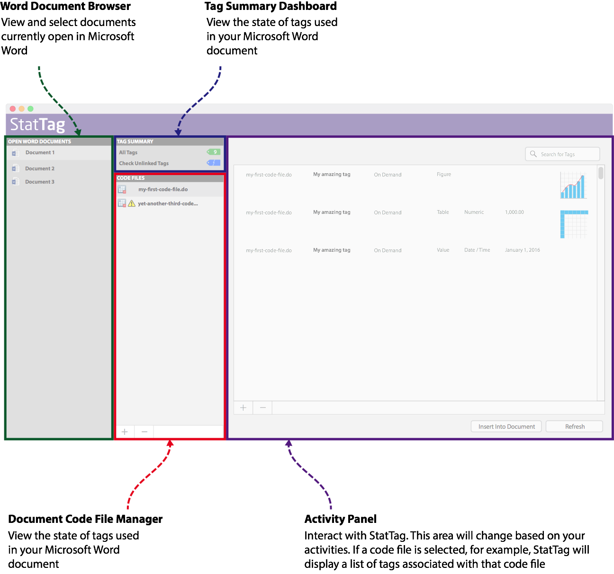

StatTag for macOS (Beta 1)
Table of Contents
What’s New in StatTag 1.0, Beta 1
The StatTag Word Toolbar (Word 2016)
Resolving Code Files with Inaccessible Paths
Inserting Figure Tags (Microsoft Word 2016)
Some features are not yet fully implemented
The current version of StatTag supports Stata only
StatTag may not function correctly if more than one instance of Microsoft Word is running
You can disrupt StatTag by interrupting document updates in Word.
Native Stata dates are not properly interpreted
Accessing StatTag code files or tags from the Microsoft Word toolbar may be slow
Launching StatTag launches Microsoft Word
While StatTag is working, you will see the screen update in Microsoft Word
When StatTag communicates with Stata, Stata will come to the foreground
If StatTag Doesn’t Perform as Expected
A tag displays [NO RESULT] instead of a value
StatTag doesn’t show the correct code files or tags
Welcome to StatTag for macOS!
This is a pre-release version of StatTag. We strongly suggest you use it only with test documents or copies of work – do not use it on documents and statistical code files you can’t afford to lose.
We’re very grateful for your help and would appreciate your feedback. In particular:
1) Did you find StatTag easy to use? Was it intuitive?
2) Did StatTag function as expected? Were you able to incorporate your working statistical package code? Were you able to tag documents?
3) Did you encounter any errors? If so, what happened? Can you tell us how to reproduce them?
Please email your feedback to: StatTag@northwestern.edu
What’s New in StatTag 1.0, Beta 1
We’ve been working hard to improve StatTag. This release has the following significant enhancements:
1. Unlinked Tag Management. StatTag now provides the ability to identify and act on “unlinked” tags – those tags which were placed in a document, but are no longer accessible to StatTag
2. Duplicate Tag Management. StatTag now allows users to review and resolve duplicate tags – those tags which share identical names within a single code file.
3. Other Improvements.
a. Tag deletion
b. Drag and drop code file addition
c. Keyboard shortcuts for some actions
d. Improved integration from the Microsoft Word 2016 “StatTag” ribbon menu
e. Improved Microsoft Word document activation
f. General usability, stability, and performance improvements
NOTE: For this release we have disabled automatic code file monitoring and user notifications. If you rename, move, or edit a code file outside of StatTag and then return to the application, StatTag will not be aware of those actions. To resolve, go into StatTag and toggle between active Microsoft Word documents. This will cause StatTag to reload code files related to the selected document.
Introduction to StatTag
StatTag is user-friendly software that integrates statistical code with document preparation in Microsoft Word. StatTag facilitates reproducible research by connecting Word documents, such as a manuscript, to associated statistical code. Word documents prepared with StatTag are reproducible dynamic documents: statistical results in the document can be automatically updated if either statistical code or data change. In addition, StatTag allows statistical code to be edited directly from Microsoft Word.
StatTag Elements
StatTag uses three core elements:
Microsoft Word Document
Code File
Tag
A “Tag” is a unit of statistical output from your Code File that you would like to treat as a unique, reproducible data element. Tags in your code file(s) identify numbers, tables, figures, or verbatim output (i.e. raw output from the statistical program console) that you would like to embed in your Word document.
How StatTag Works
There are three main steps to using StatTag:
1. Connect a Word document to files containing statistical code (i.e. .do, .sas, or .R file).
2. Annotate the code files to tag results, tables, or figures that are of interest._
3. Instruct StatTag where to insert those results within the Word document itself.
Why StatTag?
Requirements
· macOS 10.10 and above
· Microsoft Word 2016*
· Stata 13 and above
* StatTag should work with Microsoft Word 2011, but for this release we do not currently supply a toolbar for more user-friendly integration.
Installation
The current alpha test version of StatTag does not use an Installer. You will be manually installing StatTag.
· Copy StatTag to your /Applications folder
· Install the StatTag Toolbar for Word
o Launch StatTag (StatTag will automatically launch Microsoft Word if it is not already running)
o On first launch, StatTag should prompt you to install a Word toolbar
o You will need to close and restart Word in order for the Word toolbar to activate
NOTE: If you should wish to remove or reinstall the toolbar for Word, you can do so from within StatTag via the “StatTag” menu’s “Install Word Toolbar” and “Remove Word Toolbar” options.
Using StatTag for macOS
StatTag for macOS performs the same functions as StatTag for Windows, but in a macOS-friendly way. Simple, powerful, and intuitive.
You’ll find there are fewer buttons, but all of the core capabilities.
The StatTag Word Toolbar (Word 2016)
We suggest installing the StatTag toolbar for Microsoft Word. It makes interaction with StatTag easier and more reliable.

The StatTag toolbar has two groups of buttons which provide quick access to key functions
Core Functions
|
|
Code Files |
Opens the Code Files panel. See “Code Files” below. |
|
|
Tags |
Opens the Tags panel. See “Tags” below. |
|
|
View Tag |
Selecting a Tag and then clicking on this icon will open the Tag definition editor. See “Tag Editor” below. |
Utilities
|
|
Settings |
Opens the Settings window. See “Settings” below. |
|
|
About |
Opens the About window. Provides basic information about StatTag as well as links to the StatTag team’s email address and GitHub repository. |
|
|
Help |
Not yet implemented |
The StatTag Interface
The current interface is intentionally simple. The goal is to organize and expose a few key areas
1. List of open Microsoft Word documents
2. Summary of tags, unlinked tags, and duplicate tags
3. Code files (associated with a selected Word document)
4. Activity panel

Open Word Documents
This area displays a list of documents currently open in Microsoft Word.
Clicking on a Word document will activate it in StatTag, loading all code files and associated tag information.
Tag Dashboard
The Tag dashboard panel will give you an overview of your current document’s tags. It will display any of three options, depending on the state of your document:
· “All Tags” – A count of the active tags available from your document’s code files. Clicking on “All Tags” will open a list of all Tags currently available for use in your Code Files.
· “Unlinked Tags” – Tags which are used in your Word document, but which are not found in any of the referenced code files. Clicking on “Unlinked Tags” will open a list of the tags which are in your Word document, but cannot be found in your project’s accessible Code Files. See “Unlinked Tags” below.
· “Duplicate Tags” – Any tag names are reused within the same code file. Clicking on “Duplicate Tags” will open a list of Tag names which are duplicated either within or across your Code Files. See “Duplicate Tags” below.
Once an item is selected in the tag summary panel, the Activity Panel will update to reflect the appropriate interface.

Code Files
The “Code Files” panel lists the code files associated with your selected Word document.
You can:
· View a list of code files currently associated with your document
· Attach or remove code files using the macOS-standard (+) and (-)(delete) buttons
· Attach or remove code files by dragging/dropping code files into the StatTag code file list

Clicking on a code file or selecting multiple code files will cause the Activity Window to display tags associated with the selected code file.
Resolving Code Files with Inaccessible Paths
StatTag will alert you to inaccessible code files (broken paths). In order to re-link a code file to its updated path you should remove (-)(delete) the code file then add (+) it back to your document.
Supported File Extensions
StatTag uses vendor-provided file extensions to determine which files are “code” files. If your statistical code files do not use the standard file extensions set by the vendor, you will not be able to add them to StatTag.
Supported code file extensions
|
Statistical Package |
File extension(s) |
|
Stata |
.do |
|
R |
.r |
Tags
The “Tags” activity panel provides the ability to manage (define, add, remove), insert, and refresh tags. The tags panel also displays a preview of each tag’s format.
The Tags activity panel will become active when a code file is selected or the “All Tags” option is selected in the Tag Summary panel. Selecting one or more code files will filter the list of displayed tags.
Managing Tags
To add or remove tags
· Activate the Tag panel by clicking on a Code File or selecting All Tags
· Click on the add (+)(_+) or remove (-)(delete) buttons.
· To modify the definition of a tag, simply double-click on the tag
Inserting and Refreshing Tags
1. Select one or more tags in the tag list. (To select multiple tags hold the (shift) key while clicking and selecting a range of tags)
2. To insert the tag(s), click on the “Insert Tag into Document” button.
3. To refresh the values associated selected tag(s), click on the “Refresh” button.
4. You will see a progress bar while the tags process and, finally, feedback if there were issues.

Inserting Figure Tags (Microsoft Word 2016)
When inserting figure tags, Microsoft Word 2016 will prompt you to allow it access to the related figure graphic. This is by design. Microsoft Word 2016 for macOS uses a security technology known as the “Apple Sandbox.” It is designed to help protect users and prevents applications from arbitrarily accessing files on the user’s computer.
When StatTag asks Microsoft Word 2016 to insert a figure / image, the Apple Sandbox obligates Word to first obtain permission to access the image on user’s computer. Apple’s security system asserts itself as a “stop sign” before allowing Word to proceed.
Word will notify the user of the request and ask that they authorize access to the file:

Once the user clicks on the image and hits the “Select” button, a window will open and the requested file will be presented. The user must then click “Grant Access” to allow Word to insert the image.

This is done once per file. Once the user has authorized Microsoft Word to access a file, that decision is stored for future use. Subsequent requests to access that file from within Microsoft Word are automatically approved. If a figure is refreshed or another code file references the same file, the no further approval is required.
Tag Editor
The tag editor is the very heart of what drives interaction with StatTag. It is where you can define a tag within a referenced code file and describe how StatTag is to link its output to your Microsoft Word document.
There are three key activities in the tag editor:
1. When creating a new tag, choose a code file
a. Let StatTag know where this tag should be defined. You will be able to choose any of the accessible code files you have already linked to your document.
2. Select the block of code within your code file where the tag should obtain data
a. Once a code file is selected, its contents should appear in the code editor
b. Click on the margin and highlight the block you wish to use to for your tag
3. Define your tag’s settings – these drive how the result is formatted when your statistical findings are emitted to the Microsoft Word document
a. Provide a tag name. The tag name is used by StatTag to help you manage tags and has no impact on the formatted results in Word. The name should be unique within the selected code file.
b. Choose a result type. This is the way you’d like StatTag to understand the data coming back from your statistical program. Are you expecting a single value? A figure? A table?
c. Additional formatting options will appear depending on your choice of result type. Each may have addition customizations you can make to more clearly define how you would like StatTag to interpret and format your data.

NOTE: Saving a tag will cause StatTag to refresh the tag and all associated values within your Microsoft Word document.
Preferences
Preferences consist of the ability to:
· Enable and manage debug logging - You can turn on debug logging to capture information that will be assist the StatTag developers in trouble-shooting issues you may experience.
o Enable debug logging
o Set a debug log file path

Known Limitations
Some features are not yet fully implemented
This is a very early test version of StatTag. Some features are incomplete or not yet implemented.
· Support for R
o This is being actively developed
· Word Toolbar
o Word Toolbar (2011)
§ The toolbar for Word 2011 is not yet supported
o Word Toolbar (2016)
§ The toolbar does not yet implement the following features
· Help
· Code File Management
o Missing / Moved Code Files
§ StatTag detects when a code file is moved or deleted, but does not prompt the user to take action. Currently, the user simply receives an indication via the code file list.
· Tag Management
o “Always” Refresh Tag
§ Not yet implemented. Tags must be manually refreshed and will not auto-refresh when a document is opened in Word
o Support for “Verbatim” tags
§ This is being actively developed
· Help
o Help is not yet implemented
The current version of StatTag supports Stata only
For this release of StatTag for macOS we have only supplied support for Stata “do” files.
· We are actively pursuing support for R and hope to release it in a subsequent test version.
· We will not be supplying SAS integration as there is no macOS-compatible version that supports integration with 3rd party applications.
StatTag may not function correctly if more than one instance of Microsoft Word is running
On macOS it is possible to run both Microsoft Word 2011 and Microsoft Word 2016 at the same time. In this case StatTag will not necessarily know which you intended to use. We suggest running only one version at a time. Both may be installed, but only one should be actively running if you wish to use StatTag.
You can disrupt StatTag by interrupting document updates in Word
On the macOS version of StatTag it is not possible to disable access to Microsoft Word while a document is being updated. Should a document be modified or closed while StatTag is inserting or updating tags, undesirable issues may occur. Users should refrain from interacting with the active Microsoft Word document until StatTag is finished inserting or updating tags.
Native Stata dates are not properly interpreted
Currently, “native” (non-formatted) dates are not properly interpreted by StatTag. If you wish to use a Stata-based date in StatTag it is suggested you emit it as a formatted string and tag it as a StatTag “date” tag. StatTag should then be able to properly utilize the date in your Word document.
Accessing StatTag code files or tags from the Microsoft Word toolbar may be slow
You may see the macOS “spinning beach ball” due to slow performance when accessing StatTag’s code files or tags from the Microsoft Word toolbar. This will be resolved in subsequent releases.
Launching StatTag launches Microsoft Word
Currently, launching StatTag will cause Microsoft Word to launch if it is not already running. This will be addressed in subsequent releases.
While StatTag is working, you will see the screen update in Microsoft Word
During tag inserts and updates you will see the screen refresh as StatTag moves from tag to tag to update values. This is due to the way Microsoft Word functions on macOS.
When StatTag communicates with Stata, Stata will come to the foreground
On macOS, when StatTag runs a code file in an external statistical program such as Stata, that external application will launch and come to the foreground of the user’s desktop. This is by design. By default, Apple security policies cause external applications to become visible when asked to do work. When StatTag requests other applications run a code file, those applications must visibly launch.
If StatTag Doesn’t Perform as Expected
You may find that StatTag doesn’t perform as expected. Here are a few common scenarios and approaches to resolving them. If these don’t work for you, please let us know!
A tag displays [NO RESULT] instead of a value
1. Test your code in the statistical package directly (outside of StatTag). See if your code runs or if there are messages that indicate an issue.
2. If your code does run outside of StatTag, check to make sure you’re referencing the correct tag type for your output. If you are emitting a matrix, for example, have you selected a “table” tag output type?
3. Has the tag output type changed dramatically since it was initially defined? In particular, have you changed between a single value and table? Radical changes in tag definition may require you to delete and reinsert a tag.
4. It’s possible we haven’t implemented the package-specific syntax used in your code file. Let us know the command(s) you used (no sensitive data, please!) so we can add it to the enhancement list.
StatTag doesn’t show the correct code files or tags
It’s possible that StatTag doesn’t show the correct code files or tags if you make manual changes to code files outside of StatTag. This is because StatTag is not yet monitoring code files for real-time changes outside of the application. To resolve, go into StatTag and toggle between active Microsoft Word documents. This will cause StatTag to reload code files related to the selected document.